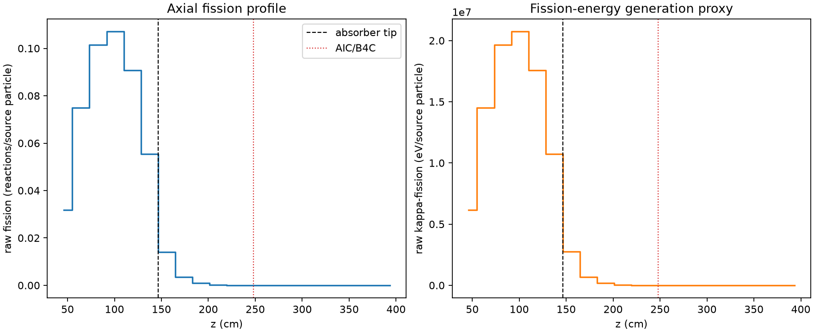
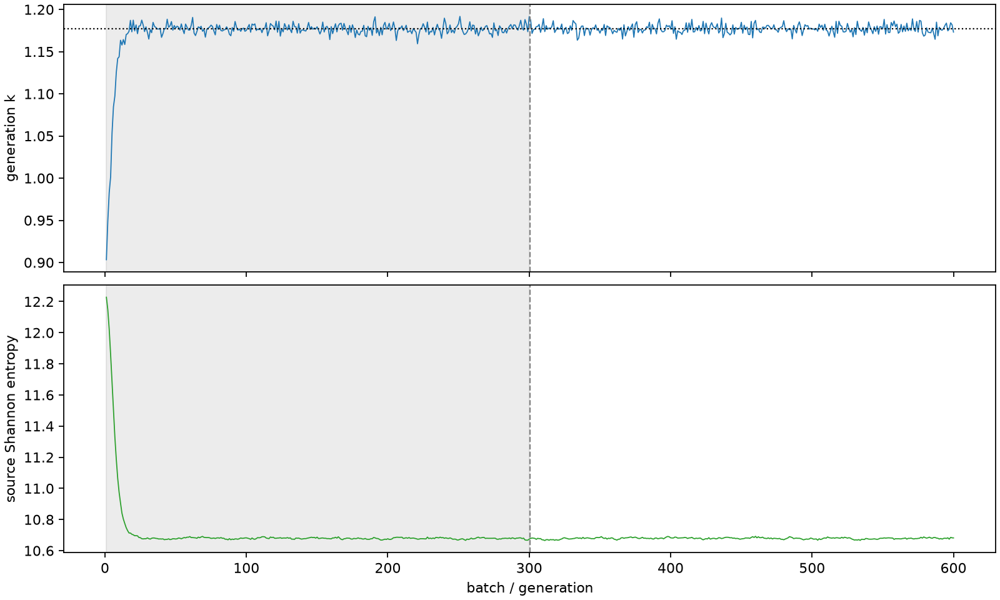

| field | value |
|---|---|
| experiment | V2-STAGE_128_OGRENCI_02-0015 |
| k | 1.177462379083656 |
| MC standard error | 0.0001816221882933745 |
| seconds | 926.4250917989993 |
| acceptance | not_assessed |
| convergence | review_required |
Completed is output integrity only; physical and statistical review required. Zero tallies do not prove zero production or zero uncertainty.
| diagnostic | value |
|---|---|
| geometric fuel voxels | 5280 |
| zero fission tally voxels | 1545 |
| low signal fuel voxels | 2529 |
| low signal fission share | 0.00011531565167766648 |
| low signal kappa share | 0.00011535383104864386 |
| important fission share | 0.9500647831417303 |
| previous filter included | 2751 |
| duration estimate s | 1562.5173488400023 |
| actual minus estimate s | -636.092257041003 |
| fission relative MC error | statistics |
|---|---|
| all_geometric_fuel | {"voxels": 5280, "positive_mean_voxels": 3735, "zero_mean_voxels": 1545, "undefined_relative_error_voxels": 1545, "median": 0.025865821850721622, "p95": 0.8568765009646981, "maximum": 1.0000000000000002} |
| low_signal | {"voxels": 2529, "positive_mean_voxels": 984, "zero_mean_voxels": 1545, "undefined_relative_error_voxels": 1545, "median": 0.5241904655923612, "p95": 1.0, "maximum": 1.0000000000000002} |
| important_95pct | {"voxels": 1540, "positive_mean_voxels": 1540, "zero_mean_voxels": 0, "undefined_relative_error_voxels": 0, "median": 0.006084208409426948, "p95": 0.009794772729257965, "maximum": 0.011996100016295908} |
| outside_previous_filter | {"voxels": 2529, "positive_mean_voxels": 984, "zero_mean_voxels": 1545, "undefined_relative_error_voxels": 1545, "median": 0.5241904655923612, "p95": 1.0, "maximum": 1.0000000000000002} |
| kappa_fission relative MC error | statistics |
|---|---|
| all_geometric_fuel | {"voxels": 5280, "positive_mean_voxels": 3735, "zero_mean_voxels": 1545, "undefined_relative_error_voxels": 1545, "median": 0.02583411291882179, "p95": 0.8584395526271953, "maximum": 1.0000000000000002} |
| low_signal | {"voxels": 2529, "positive_mean_voxels": 984, "zero_mean_voxels": 1545, "undefined_relative_error_voxels": 1545, "median": 0.5234158981533978, "p95": 1.0, "maximum": 1.0000000000000002} |
| important_95pct | {"voxels": 1540, "positive_mean_voxels": 1540, "zero_mean_voxels": 0, "undefined_relative_error_voxels": 0, "median": 0.006077674859136618, "p95": 0.009782616432974484, "maximum": 0.011982273035396817} |
| outside_previous_filter | {"voxels": 2529, "positive_mean_voxels": 984, "zero_mean_voxels": 1545, "undefined_relative_error_voxels": 1545, "median": 0.5234158981533978, "p95": 1.0, "maximum": 1.0000000000000002} |
| axial bin | fission share | kappa-fission share |
|---|---|---|
| 1 | 0.06613974500221709 | 0.06614174754237546 |
| 2 | 0.15612169338181442 | 0.15611938194061764 |
| 3 | 0.21126288239013197 | 0.21125931533564296 |
| 4 | 0.22280203887183564 | 0.22279861384536712 |
| 5 | 0.1889648895570648 | 0.18896163711845218 |
| 6 | 0.11527169904236557 | 0.11527083012352841 |
| 7 | 0.02940453069173639 | 0.02941278869417114 |
| 8 | 0.007441238370220736 | 0.007443531975430501 |
| 9 | 0.0019252531871749106 | 0.0019258940170736988 |
| 10 | 0.0004946886347228322 | 0.0004948626411506936 |
| 11 | 0.00013087460917032847 | 0.00013091213366752394 |
| 12 | 3.1998696803827347e-05 | 3.2011504470239984e-05 |
| 13 | 6.547225871831121e-06 | 6.5517762656203215e-06 |
| 14 | 1.7406404665451266e-06 | 1.7415014289917471e-06 |
| 15 | 1.7969840307889263e-07 | 1.798503578778878e-07 |
| 16 | 0.0 | 0.0 |
| 17 | 0.0 | 0.0 |
| 18 | 0.0 | 0.0 |
| 19 | 0.0 | 0.0 |
| 20 | 0.0 | 0.0 |
Histories include the inactive-to-active transition at batch 300. kappa-fission approximates fission energy production, not total heat deposition.

